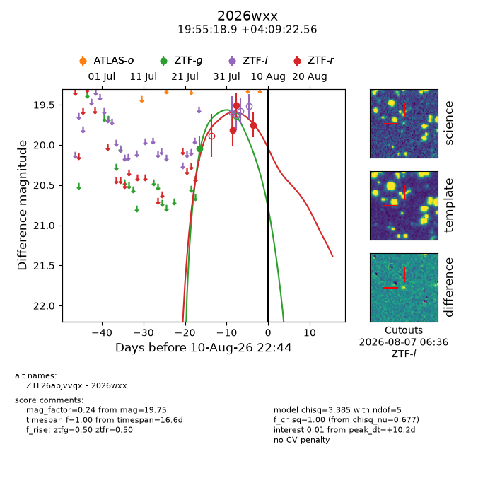
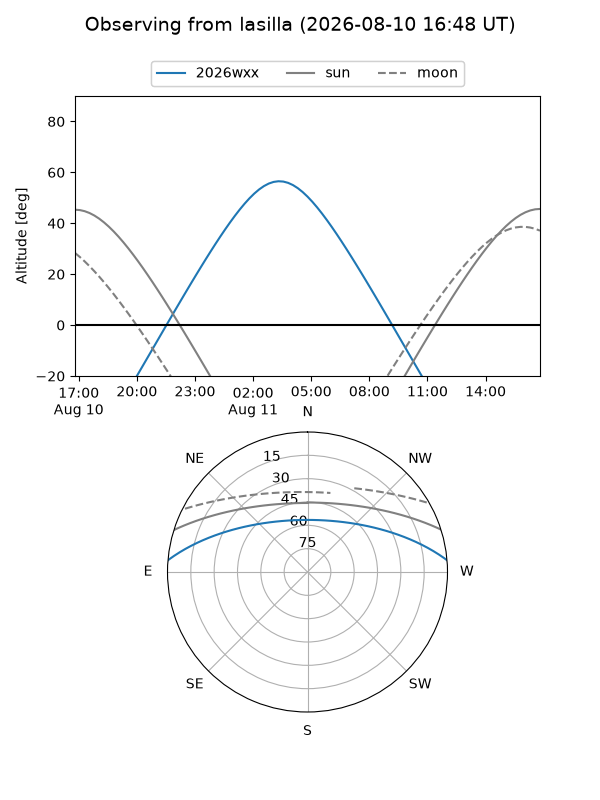
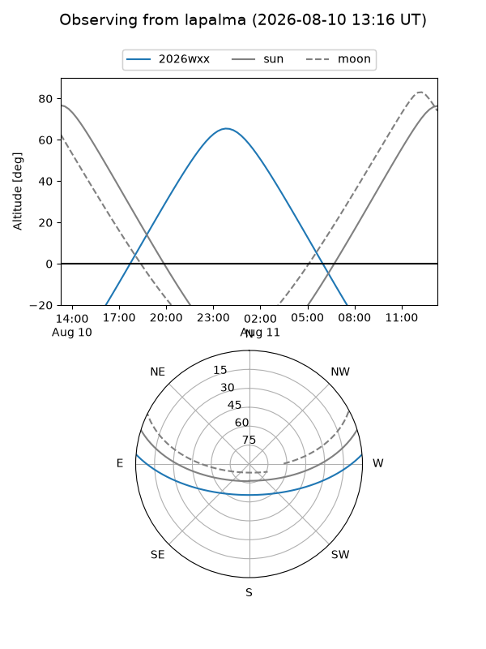
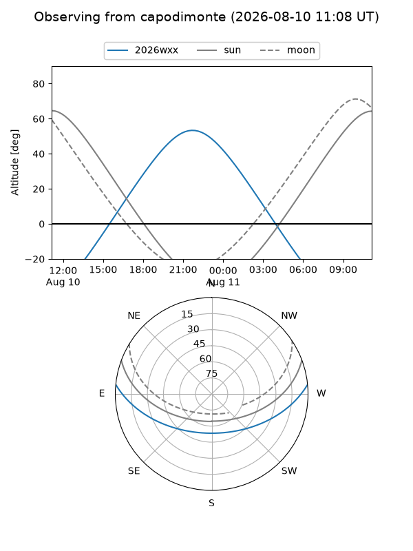
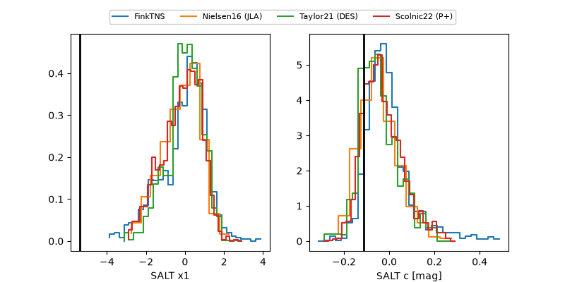

2026wxx
Target 2026wxx at 2026-08-11 10:34
Aliases and brokers:
FINK-ZTF: ztf.fink-portal.org/ZTF26abjvvqx
Lasair-ZTF: lasair-ztf.lsst.ac.uk/objects/ZTF26abjvvqx
ALeRCE-ZTF: alerce.online/object/ZTF26abjvvqx
YSE-PZ: ziggy.ucolick.org/yse/transient_detail/2026wxx
TNS name: wis-tns.org/object/2026wxx
Direct TNS query: direct search
alt names
ZTF26abjvvqx (ztf,fink_ztf)
2026wxx (tns,yse)
Coordinates:
equatorial (ra, dec) = 298.8288,+4.15627
equatorial (HMS+DMS) = 19:55:18.91,+04:09:22.56
galactic (l, b) = (44.1182,-12.19054)
Flags:
TNS type: nan
peak dt: +10.7
Photometry:
last ztfg=20.04, ztfr=19.75
1 ztfg, 3 ztfr detections
Lightcurve

Visibility



Additional plots
